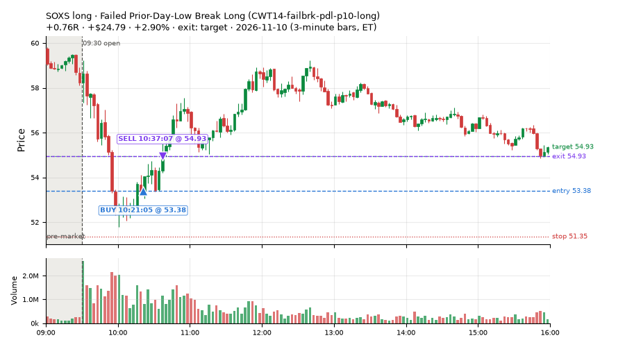
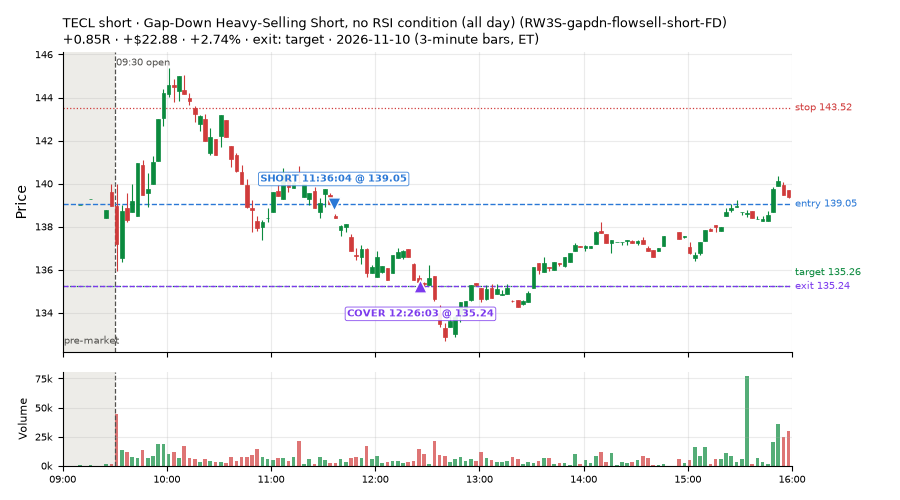
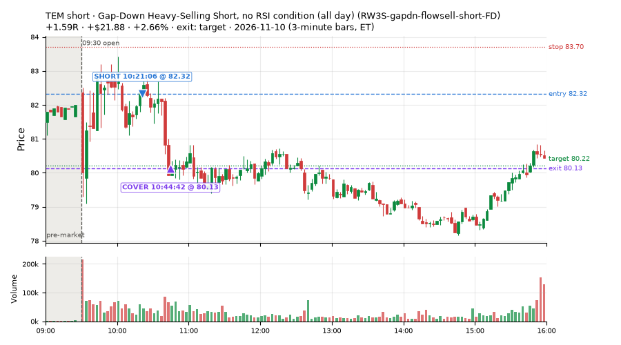
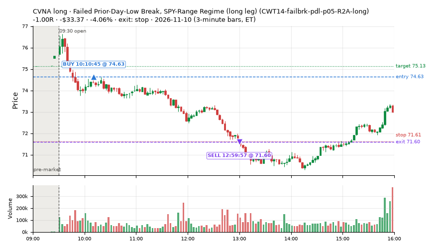
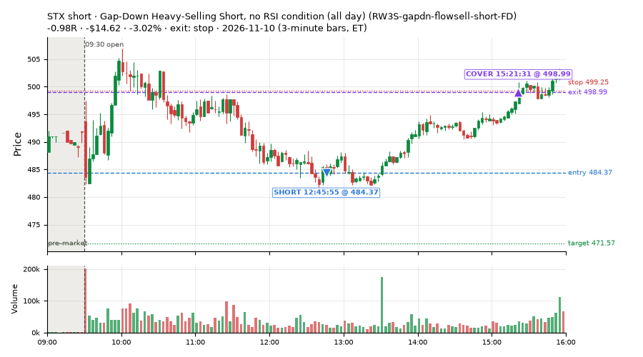
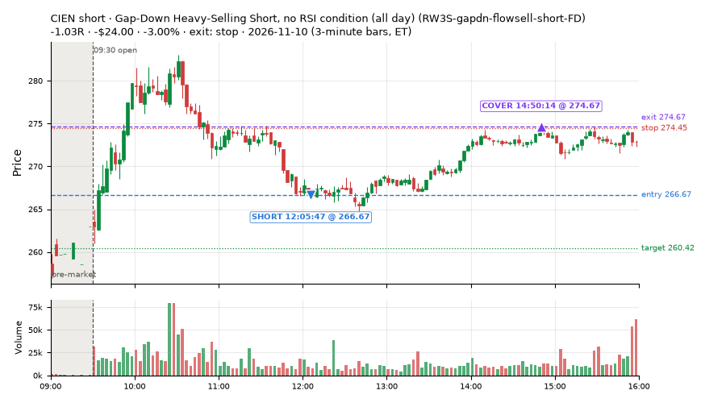
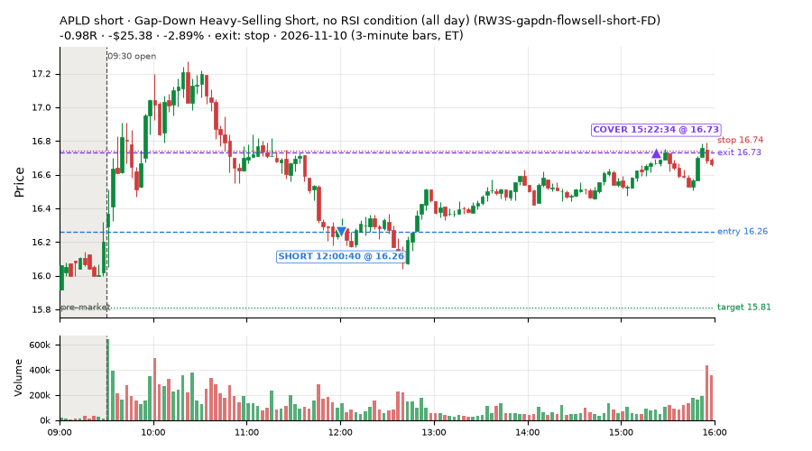
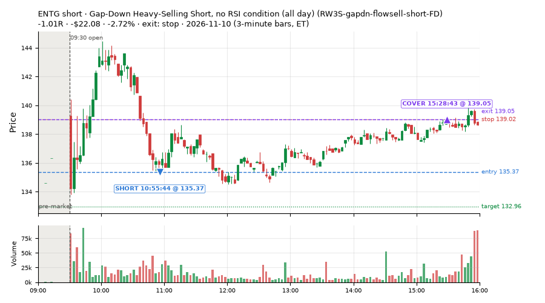

147 trades · win rate 46% · P/L $-324.73
PROBATION: no live setup has passed both locked test periods. 10 owner-directed setups added 2026-10-08 (MarcoFlow top 5 + 5 new), untested live. RW6G1 (RW6 + VWAP band guard) added 2026-10-09, probation.

| Symbol | Setup | Side | In | Out | Entry | Exit | Exit reason | % gained | P/L |
|---|---|---|---|---|---|---|---|---|---|
| SOXS | Failed Prior-Day-Low Break Long (CWT14-failbrk-pdl-p10-long) | long | 10:21 | 10:37 | 53.38 | 54.93 | target | +2.90% | $24.79 |
| TECL | Gap-Down Heavy-Selling Short, no RSI condition (all day) (RW3S-gapdn-flowsell-short-FD) | short | 11:36 | 12:26 | 139.05 | 135.24 | target | +2.74% | $22.88 |
| TEM | Gap-Down Heavy-Selling Short, no RSI condition (all day) (RW3S-gapdn-flowsell-short-FD) | short | 10:21 | 10:44 | 82.32 | 80.13 | target | +2.66% | $21.88 |
| Symbol | Setup | Side | In | Out | Entry | Exit | Exit reason | % lost | P/L |
|---|---|---|---|---|---|---|---|---|---|
| CVNA | CWT14-failbrk-pdl-p05-R2A-long | long | 10:10 | 12:59 | 74.63 | 71.60 | stop | -4.06% | $-33.37 |
| STX | RW3S-gapdn-flowsell-short-FD | short | 12:45 | 15:21 | 484.37 | 498.99 | stop | -3.02% | $-14.62 |
| CIEN | RW3S-gapdn-flowsell-short-FD | short | 12:05 | 14:50 | 266.67 | 274.67 | stop | -3.00% | $-24.00 |
| APLD | RW3S-gapdn-flowsell-short-FD | short | 12:00 | 15:22 | 16.26 | 16.73 | stop | -2.89% | $-25.38 |
| ENTG | RW3S-gapdn-flowsell-short-FD | short | 10:55 | 15:28 | 135.37 | 139.05 | stop | -2.72% | $-22.08 |








Signal to fill: median 2s, 90th percentile 5s (147 trades). Bars close each minute; the order follows the bar close.
Best excursion (MFE): median 0.32R; worst (MAE) median 0.57R. 43% of trades never got +0.25R in our favour; 1 reached +1R and still closed at or below 0.
| Symbol | Setup | Best R | Worst R | Closed R |
|---|---|---|---|---|
| SPXL | RW3S-gapdn-flowsell-short-FD | +0.88 | -1.08 | -1.01 |
| QLD | RW3S-gapdn-flowsell-short-FD | +0.85 | -1.04 | -1.02 |
| TQQQ | RW3S-gapdn-flowsell-short-FD | +1.08 | -0.98 | -0.77 |
| COIN | RW3S-gapdn-flowsell-short-FD | +0.74 | -1.10 | -1.01 |
| ETHA | RW3S-gapdn-flowsell-short-FD | +0.73 | -1.02 | -1.01 |
| Entry time | Trades | Win | Avg R | P/L |
|---|---|---|---|---|
| 09:50-10:30 | 43 | 65% | +0.01 | $9.99 |
| 10:30-11:30 | 45 | 58% | -0.07 | $-1.97 |
| 11:30-13:00 | 38 | 18% | -0.49 | $-258.87 |
| 13:00-14:00 | 15 | 40% | -0.14 | $-30.76 |
| 14:00-16:00 | 6 | 0% | -0.50 | $-43.12 |
| Setup | Trades | Win | Avg R | Adj R (net of SPY) | Avg R ex-market (all sessions) | P/L |
|---|---|---|---|---|---|---|
| Stretched Below VWAP Bounce (CWT13-vwapstretch-z05-long) | 3.0 | 100% | +0.47 | +0.20 | +0.01 (beta +1.38, n 264) | $18.00 |
| Failed Prior-Day-Low Break, SPY-Range Regime (long leg) (CWT14-failbrk-pdl-p05-R2A-long) | 26.0 | 73% | -0.01 | +0.02 | +0.02 (beta +0.47, n 136) | $-12.01 |
| Failed Prior-Day-Low Break Long (CWT14-failbrk-pdl-p10-long) | 19.0 | 68% | -0.02 | +0.09 | -0.06 (beta +1.25, n 562) | $19.07 |
| Failed Prior-Day-Low Break Long (0.1 ATR, low volume) [fill] (CWT14-failbrk-pdl-p10-lowvol-long) | 9.0 | 67% | -0.07 | +0.16 | -0.06 (beta +1.30, n 237) | $-10.85 |
| Sellers into Strength (all day) (MF5-flowsell-vwapup-rsi5hi) owner-directed; holdouts once: Sep-Oct -0.001R n264, Apr-Jun -0.010R n1199 | 3.0 | 0% | -0.80 | -0.47 | +0.32 (beta -1.25, n 19) | $-13.15 |
| Gap-Down Capitulation Buy (near-miss) (NM-AR-AM-gapdown-capitulation-long) | 4.0 | 0% | -0.63 | -0.76 | -0.45 (beta +1.19, n 58) | $-42.31 |
| Afternoon Higher-Low Long (near-miss) (NM-HL-T75-pm-long) | 2.0 | 100% | +0.49 | +0.39 | +0.07 (beta +1.70, n 52) | $11.74 |
| Early Sellers into a Pop (index down, no gap up) (near-miss) (NM-MF3-qqqdn-gapdn-FD) | 8.0 | 12% | -0.58 | -0.13 | +0.00 (beta -2.21, n 34) | $-40.81 |
| Gap-Down Bounce Short, Heavy Selling (all day) (RW1-gapdn-bounce-flowsell-short-FD) | 8.0 | 38% | -0.06 | +0.09 | +0.01 (beta -1.51, n 75) | $-0.70 |
| Gap-Down Heavy-Selling Short, no RSI condition (all day) (RW3S-gapdn-flowsell-short-FD) | 61.0 | 30% | -0.29 | -0.20 | -0.17 (beta -1.36, n 204) | $-245.83 |
| exhaustion_short-FD | 4.0 | 50% | +0.01 | +0.20 | -0.15 (beta -1.11, n 89) | $-7.88 |
Market direction (SPY, beta 1) accounted for $-186.60 of today's $-324.73; the rest ($-138.13) came from the setups themselves. Avg R net of SPY: -0.08 (incl. a hedge leg's cost; report only).
17 setups live today. Today: 262 signals, 147 taken, 6 lost because another setup held the symbol (2%). Since 2026-10-12 (22 sessions): 9929 signals, 5013 taken, 721 lost to other setups (7%). Peak open positions today 65 of 400 slots. Earnings blackout removed 1253 symbols before scanning.
Simulated playing time (not live): 4899 what-if trades of signals not taken, avg -0.08R, 58% winners; of them 721 lost to another setup (avg -0.19R).
Silent: LD4-st4-breadthup-t1s05-long, LD8-spy-dip030-breadthturn-spxl-holdtr-long, LD1-ns1-breadthup-t05s1-long, CWT04-backside-lh-a25-short, CWT04-backside-vwaptest-a25-short · Crowded out: MF5-flowsell-vwapup-rsi5hi, CWT14-failbrk-pdl-p05-R2A-short, NS3-failed-vwap-reclaim-short-FD · Starved: exhaustion_short-FD, NS5-sma50-flush-oversold-long-FD, RW4-ns3-adv150-short-FD, MF2-open-rsimidhi-flowsell
| Prio | Setup | Today sig / taken | Sessions | Signals / taken / trades | Taken/day | Expected/day | Lost to other setups | Lost to (setup n) | Top skip reasons | SIMULATED: not-taken n / avg R / win | Verdict |
|---|---|---|---|---|---|---|---|---|---|---|---|
| 1 | Big Loser VWAP Reclaim Fade, Morning, Wide Stop NS3V1-am-widestop-short | 7 / 0 | 13 | 93 / 42 / 42 | 3.23 | 5.30 | 3 | NS3V1-am-widestop-short 3, NM-RWR3-ns3-qqqup-early-short 1, NM-RWN3-ns3-spyup-early-short 1 | not shortable / shorts off 27, spread / quote / size 21, symbol held by another setup 3 | 51 / -0.01R / 61% | ok 16.2 entries/week |
| 2 | Gap-Down Capitulation Buy (near-miss) NM-AR-AM-gapdown-capitulation-long | 6 / 4 | 17 | 88 / 58 / 58 | 3.41 | – | 0 | – | spread / quote / size 29, other 1 | 30 / -0.16R / 43% | ok 17.1 entries/week |
| 3 | Afternoon Higher-Low Long (near-miss) NM-HL-T75-pm-long | 4 / 2 | 17 | 61 / 52 / 52 | 3.06 | – | 2 | CWT09-gapdn-vwaploss-g10-short 2, CWT09-gapdn-bounce-g10-lowerhalf-short 2 | spread / quote / size 7, symbol held by another setup 2 | 9 / +0.15R / 78% | ok 15.3 entries/week |
| 4 | Early Sellers into a Pop (index down, no gap up) (near-miss) NM-MF3-qqqdn-gapdn-FD | 9 / 8 | 15 | 58 / 34 / 34 | 2.27 | 4.90 | 4 | NM-AR-AM-gapdown-capitulation-long 4 | not shortable / shorts off 10, spread / quote / size 9, symbol held by another setup 4 | 24 / +0.27R / 62% | slow 11.3 entries/week; ~5 weeks to 60 trades |
| 5 | Stretched Above VWAP Fade (far) CWT13-vwapstretch-z075-short | 0 / 0 | 22 | 46 / 25 / 25 | 1.14 | – | 0 | – | not shortable / shorts off 10, daily loss cap 4, spread / quote / size 3 | 21 / -0.47R / 29% | slow 5.7 entries/week; ~11 weeks to 60 trades |
| 6 | Gap-Down Bounce Short, Heavy Selling (all day) RW1-gapdn-bounce-flowsell-short-FD | 19 / 8 | 15 | 147 / 75 / 75 | 5.00 | 17.10 | 5 | NM-AR-AM-gapdown-capitulation-long 1, NM-HL-T75-pm-long 1, CWT12-coil-k4-long 1 | spread / quote / size 29, not shortable / shorts off 14, other 14 | 72 / +0.07R / 53% | ok 25.0 entries/week |
| 7 | Sellers into Strength (all day) MF5-flowsell-vwapup-rsi5hi | 4 / 3 | 15 | 51 / 19 / 19 | 1.27 | 15.47 | 21 | MF5-flowsell-vwapup-rsi5hi-FD 19, NM-AR-AM-gapdown-capitulation-long 1, CWT14-failbrk-pdl-p05-R2A-long 1 | symbol held by another setup 21, spread / quote / size 5, other 4 | 32 / -0.17R / 44% | crowded-out 21 of 51 signals (41%) lost to setups already holding the symbol |
| 8 | exhaustion_short-FD exhaustion_short-FD | 6 / 4 | 15 | 145 / 89 / 89 | 5.93 | 64.64 | 3 | CWT12-coil-k4-long 3 | not shortable / shorts off 31, spread / quote / size 18, other 4 | 56 / -0.14R / 46% | starved 5.93 entries/day vs ~64.64 expected |
| 9 | Failed Prior-Day-Low Break, SPY-Range Regime (long leg) CWT14-failbrk-pdl-p05-R2A-long | 34 / 26 | 7 | 201 / 136 / 136 | 19.43 | – | 6 | RW3S-gapdn-flowsell-short-FD 6 | spread / quote / size 59, symbol held by another setup 6 | 64 / -0.11R / 61% | ok 97.1 entries/week |
| 10 | Failed Prior-Day-Low Break, SPY-Range Regime (short leg) CWT14-failbrk-pdl-p05-R2A-short | 0 / 0 | 7 | 54 / 22 / 22 | 3.14 | – | 18 | CWT14-failbrk-pdl-p10-long 18, CWT14-failbrk-pdl-p10-lowvol-long 8 | symbol held by another setup 18, spread / quote / size 11, not shortable / shorts off 3 | 32 / +0.03R / 66% | crowded-out 18 of 54 signals (33%) lost to setups already holding the symbol |
| 11 | Stretched Below VWAP Bounce CWT13-vwapstretch-z05-long | 5 / 3 | 21 | 528 / 264 / 264 | 12.57 | – | 3 | CWT14-failbrk-pdh-p05-lowvol-short 1, CWT09-gapdn-vwaploss-g10-short 1, CWT09-gapdn-bounce-g10-lowerhalf-short 1 | daily loss cap 152, spread / quote / size 55, other 52 | 263 / -0.10R / 60% | ok 62.9 entries/week |
| 12 | Afternoon VWAP Reclaim Fade NS4-pm-vwap-reclaim-oversold-short | 1 / 0 | 10 | 33 / 16 / 16 | 1.60 | 3.05 | 0 | – | other 8, spread / quote / size 6, not shortable / shorts off 3 | 17 / -0.10R / 41% | slow 8.0 entries/week; ~8 weeks to 60 trades |
| 13 | Failed Prior-Day-Low Break Long (0.1 ATR, low volume) [fill] CWT14-failbrk-pdl-p10-lowvol-long | 17 / 9 | 17 | 377 / 237 / 237 | 13.94 | – | 10 | CWT14-failbrk-pdl-p10-long 3, RW3S-gapdn-flowsell-short-FD 3, CWT14-failbrk-pdl-p05-lowvol-long 2 | spread / quote / size 85, other 31, daily loss cap 12 | 137 / -0.01R / 64% | ok 69.7 entries/week |
| 14 | Failed Prior-Day-Low Break Long CWT14-failbrk-pdl-p10-long | 32 / 19 | 22 | 907 / 562 / 562 | 25.55 | – | 27 | CWT14-failbrk-pdl-p10-lowvol-long 15, CWT14-failbrk-pdl-p05-lowvol-long 4, RW3S-gapdn-flowsell-short-FD 4 | spread / quote / size 212, other 56, daily loss cap 31 | 341 / +0.03R / 68% | ok 127.7 entries/week |
| 15 | Gap-Down Heavy-Selling Short, no RSI condition (all day) RW3S-gapdn-flowsell-short-FD | 118 / 61 | 6 | 426 / 204 / 204 | 34.00 | – | 10 | CWT14-failbrk-pdl-p05-R2A-long 6, NM-AR-AM-gapdown-capitulation-long 3, CWT14-failbrk-pdl-p10-lowvol-long 2 | spread / quote / size 110, not shortable / shorts off 59, other 43 | 222 / -0.11R / 44% | ok 170.0 entries/week |
| 16 | Generated: Z12lem1p9, FlowShiftlem0p96 AM short (BRopgt0p5, t1s1) GEN-261022-07-Z12lem1p9-FlowShiftlem0p96-ATRdge3p6-AM-BRopgt0p5-t1s1-short | 0 / 0 | 2 | 3 / 1 / 1 | 0.50 | – | 0 | – | not shortable / shorts off 1, other 1 | 2 / -0.60R / 0% | slow 2.5 entries/week; ~24 weeks to 60 trades |
| 17 | Generated: NewLOD, Flow3lem0p37 LUNCH short (BRopgt0p5, holdtr) GEN-261026-03-NewLOD-Flow3lem0p37-FromOpenATRlem0p78-LUNCH-BRopgt0p5-holdtr-short | 0 / 0 | 2 | 5 / 0 / 0 | 0.00 | – | 0 | – | not shortable / shorts off 5 | 5 / +0.95R / 100% | slow no entries yet |
Every trade is attached as a CSV you can open and edit in Excel or Google Sheets. Live page: https://misiti15.github.io/MCF/live/